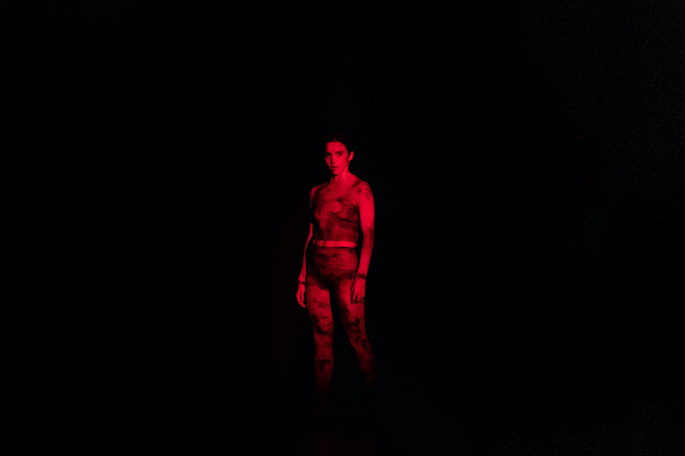
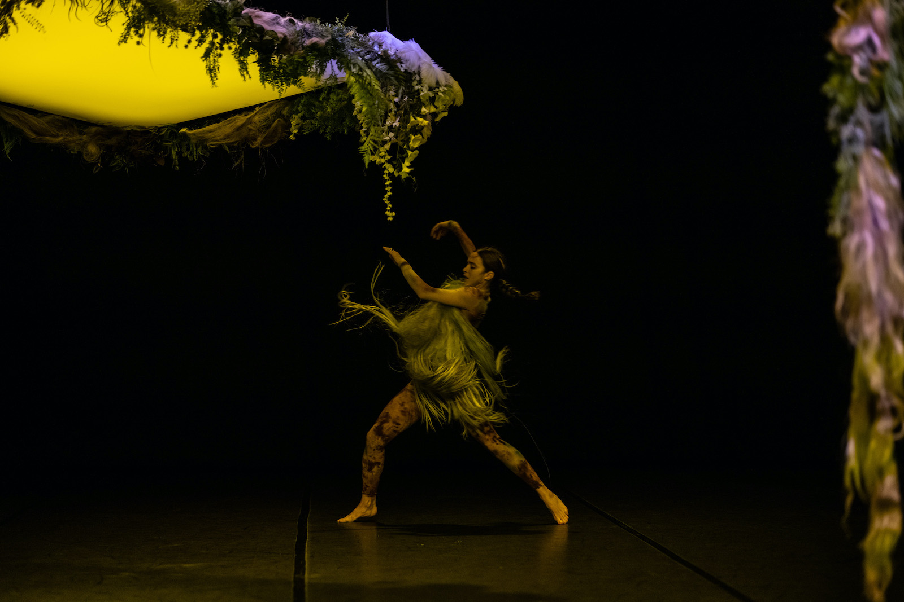
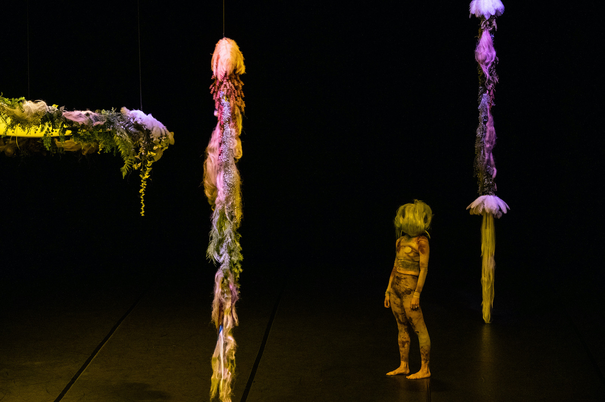

La notte è il mio giorno preferito
La notte è il mio giorno preferito è una riflessione sul rapporto con l’Altro attraverso una meditazione sugli animali e gli ecosistemi in cui vivono.
Lo spettacolo prende spunto dalla pratica, delineata da Baptiste Morizot nel saggio Sur la piste animale, del tracciamento filosofico: l’esercizio di seguire le piste attraversate dagli animali selvatici nel tentativo di prenderne in prestito lo sguardo e intuirne le possibilità d’azione, seguendo la posizione ontologica prospettivista formulata dall’antropologo Eduardo Viveiros de Castro.
Una residenza organizzata da far° Nyon ha permesso alla stessa Ajmone di fare esperienza della pratica di tracciamento nel territorio di Val d’Illiez (Svizzera) e di approfondire la ricerca sul suo ecosistema.
L’animale e il vegetale, l’organico e l’inorganico si fondono nello spazio oscuro della foresta notturna; frane e richiami irrompono spezzandone la quiete. Segnali e strumenti percettivi misteriosi, ispirati a diverse specie, ne costituiscono il tessuto connettivo. Una foresta né vergine né idealizzata, ma tecnonaturale, che include e trasforma i segni lasciati dai propri abitanti.
Il titolo La notte è il mio giorno preferito, tratto da una lettera di Emily Dickinson, si riferisce al buio come spazio della presenza assentata dell’animale, come luogo dell’intuizione e dell’incontro con l’Altro.
La notte è il mio giorno preferito è immaginato e realizzato in collaborazione con Natália Trejbalová (artista visiva), Stella Succi (ricercatrice), Giulia Pastore (light designer), Jules Goldsmith (costumista), Flora Yin-Wong (sound artist).
Produzione Associazione L’Altra.
Coproduzione FOG Triennale Milano Performing Arts, Fondazione del Teatro Grande di Brescia,
Torinodanza, Fondazione I Teatri Reggio Emilia \ Festival Aperto, Lac Lugano Arte e Cultura, Azienda
Speciale Palaexpo – Mattatoio | Progetto Prendersi cura.
Con il sostegno di Centro Nazionale di Produzione della Danza Virgilio Sieni e di Fondazione CR
Firenze, Oriente Occidente, far° festival des arts vivants Nyon.
Artista Associata Triennale Teatro Milano 2021-2024.
Compagnia finanziata da MiC - Ministero della cultura.
Ideazione, danza
Annamaria Ajmone
Set, styling, immagini
Natália Trejbalová
Ricerca, collaborazione drammaturgica
Stella Succi
Musiche
Flora Yin Wong
Costume
Jules Goldsmith
Direzione tecnica, disegno luci
Giulia Pastore
Preparazione voce
VEZA e Paola Stella Minni
Progetto web
Giulia Polenta
Organizzazione
Martina Merico
Amministrazione
Francesca d’Apolito
far° Nyon ha appositamente organizzato una residenza per approfondire questa ricerca attraverso una serie di incontri.
Marie-Thérèse Sangra (WWF Valais romand), Roland Hammel (pastore), Jean-Luc Gilabert (agricoltore), Roland Metral (ingegnere forestale), Jean-Marc Landry (etologo), Giacinthe Grima (etologa), and François (pastore) mi hanno generosamente guidato, insieme alla scenografa Natalia Trejbalova e alla drammaturga Stella Succi, alla scoperta dell'ecosistema alpino, del prezioso equilibrio della sua foresta, delle sue tracce animali.
Da questa esperienza, nasce un progetto web realizzato a partire dalle narrazioni raccolte nelle aree alpine della Val d'Illiez e della Jura.
Ascolta Flora Yin Wong